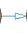
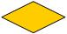
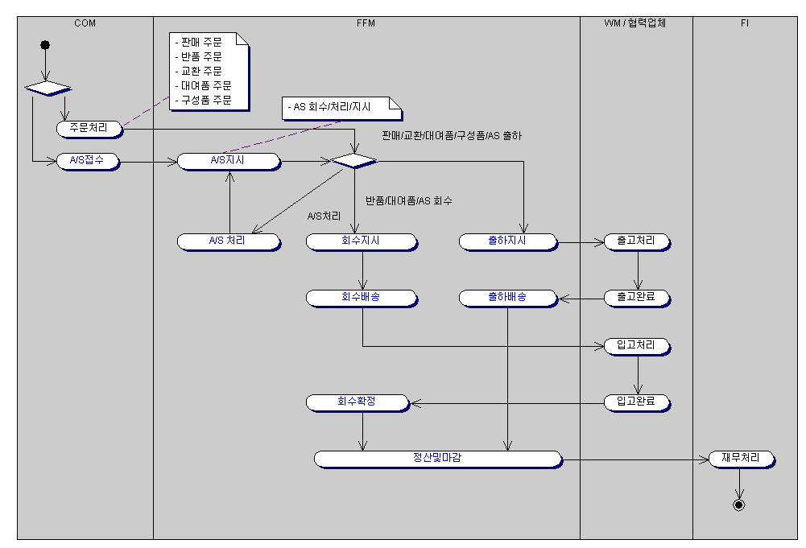
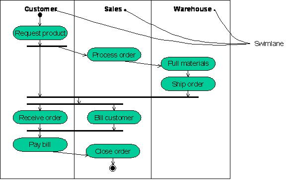

| Main Description |
작성항목
-
Activity
: 업무
흐름을 나타내기 위한 작업 단위를 나타낸다. Activity는 Action State와 Activity State로 구분할 수 있다. 업무흐름의 파악을 위한 경우에 한 액티비티의 크기는 단위 유스케이스 크기
정도가 적합하다. 너무 상세하여 업무흐름 파악에 방해가 되지 않도록 한다.
-
-
Action
State : 더
이상 쪼갤 수 없는 최소화된 실행단위
-
Activity
State : 더 작은 단위로 분할이 가능한 단위로 다른 액티비티다이어그램으로 상세화 될 수 있는 단위임
표현 예
-
Start/End
State : 프로세스의 시작과 끝을 나타내는 State이다. Start State와 End State를 특정 Swimlane에 위치시키는 것도 중요한 의미를 갖는다.
표현 예
: Start
State : End
State
-
Transition
: 하나의 Action 또는 Activity 상태에서 다른 Action 또는 Activity 상태로의 통제흐름을 보여 주는 경로이다.
표현 예

-
Branching
: Boolean 표현에 따라 다른 경로를 갖게 되는 경우를 표현한다.하나의 입력 Transition과 두개 이상의 출력 Transition으로 구성된다.
표현 예

-
Synchronization
Bar : 병렬로 생기는 통제의 Fork와 Join을 명시하기 위하여 사용된다.
-
Fork
: 하나의 통제를 두 개 이상의 동시 통제로 분리하는 것을 나타낸다. 하나의 입력 Transition과 두 개 이상의 출력 Transition를 가지며 각 전이는 독립적인 통제를 가진다. Fork 아래서
이러한 흐름에 참여하는 Activity들은 동시성을 가진다.
-
Join
: 두 개 이상의 동시적인 통제의 흐름을 일치화 시키는 것을 나타낸다. 두 개 이상의 입력 Transition와 하나의 출력 Transition로 구성된다.
표현 예

-
SwimLane
: Activity의 책임을 보여주기 위해 시스템을 사용하는 Role 또는 외부시스템을 Swimlane에 표현한다. 모든 Activity는 단 하나의 Swimlane에 속하며, 전이는 여러 Swimlane에
걸쳐서 발생할 수 있다.
표현 예

|